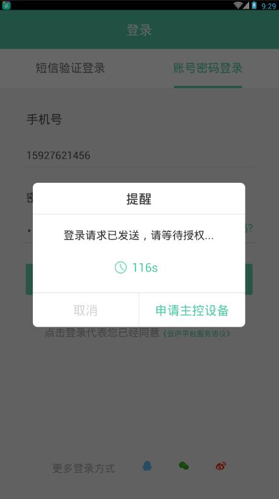
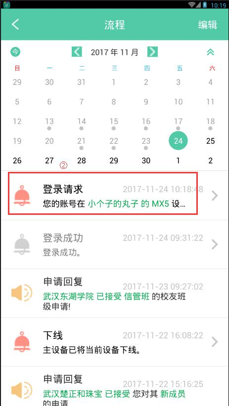

1. 主控设备如何授权辅设备登录？
1. 在辅设备的登录页面输入正确的账号密码，点击"登录"。
- 注：主设备是注册账号的原始设备，只有一个；同一个账号可以在多个辅设备上登录，辅设备允许有多个。
2. 点击确定后，会弹出提醒框。
3. 在主控设备的流程中会接收提醒，点击"登录请求"。
4. 进入登录请求页面，点击"同意登录"->"确定"。辅设备直接登录成功。
- 注：数据共享中的人脉、资金右滑按钮，可以让辅设备看到； 登录时长为辅设备登录时长，“30分钟、60分钟、120分钟”任由选择。